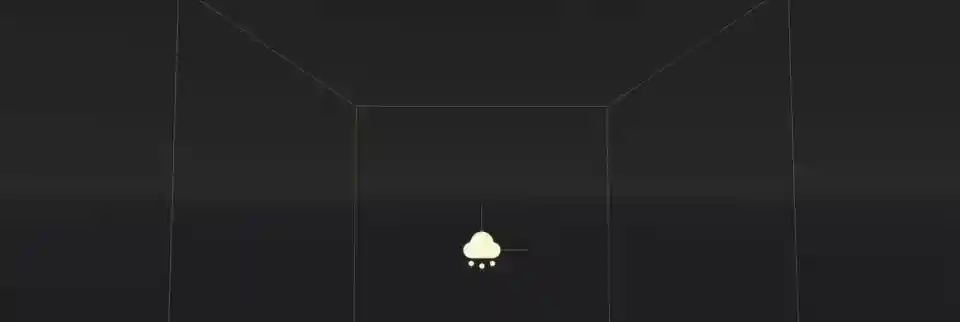
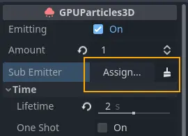
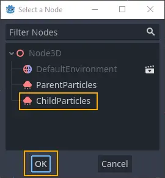

Particle sub-emitters

Sometimes a visual effect cannot be created with a single particle system alone. Sometimes a particle system needs to be spawned as a response to something that happens in another particle system. Fireworks are a good example of that. They usually consist of several stages of explosions that happen in sequence. Sub-emitters are a good way to achieve this kind of effect.

Click to assign a sub-emitter...

...and select one from the scene
A sub-emitter is a particle system that spawns as a child of another particle system. You can add sub-emitters to sub-emitters, chaining particle effects as deep as you like.
To create a sub-emitter, you need at least two particle systems in the same scene. One of them will be the
parent and one will be set as the child. Find the Sub Emitter property on the parent
and click the box next to it to assign the sub-emitter. You will see a list of available particle
systems in the scene. Select one and click the confirmation button.
Particle systems from instanced scenes can be set as sub-emitters too, as long as the
Editable Children property is enabled on the instanced scene. This also works the other
way around: You can assign a sub-emitter to a particle system in an instanced scene,
even one coming from a different instanced scene.
Note
When you set a particle system as the sub-emitter of another, the system stops
emitting, even if the Emitting property was checked. Don't worry, it didn't break. This happens
to every particle system as soon as it becomes a sub-emitter. You also won't be able to
re-enable the property as long as the particle system is used as a sub-emitter.
Warning
Even though the parent particle system can be selected from the list of available particle systems, a particle system which is its own sub-emitter does not work in Godot. It will simply not spawn. The same is true for any other kind of recursive or self-referential sub-emitter setup.
Emitter mode
When you assign a sub-emitter, you don't see it spawn right away. Emitting is disabled
by default and needs to be enabled first. Set the Mode property in the Sub Emitter group
of the ParticleProcessMaterial to something other than Disabled.
The emitter mode also determines how many sub-emitter particles are spawned. Constant
spawns a single particle at a frequency set by the Frequency property. For At End
and At Collision you can set the amount directly with the Amount At End and the
Amount At Collision properties.
Limitations
One thing to keep in mind is that the total number of active particles from the sub-emitter
is always capped by the Amount property on the sub-emitter particle system. If you find
that there are not enough particles spawned from the sub-emitter, you might have to increase
the amount in the particle system.
Some emitter properties are ignored when a particle system is spawned as a sub-emitter.
The Explosiveness property, for example, has no effect. Depending on the emitter mode,
the particles are either spawned sequentially at fixed intervals or explosively all at once.